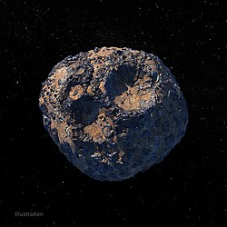

16 Psyche is an asteroid in the outer asteroid belt.
It was discoered in 1852 and is named after the Roman goddess of erotic love and is among the largest and most massive asteroids.
Psyche is one of the largest asteroids, having a mean diameter greater than 200 km.
Psyche is an M-type asteroid and is of interest for its potentially metal-rich surface.
For that reason, NASA has sent a probe to study the asteroid.
Psyche was discovered in 1852 by astronomer Annibale de Gasparis at the Naples Observatory.
Psyche is the name of the Greco-Roman goddess of erotic love and desire, wife of Eros/Cupid.
She is also depicted possessing butterfly wings.
Psyche is an outer main-belt asteroid, with a semi-major axis of 2.92 AU.
It takes 5 years for Psyche to complete one orbit around the Sun.
The eccentricity is 0.13, and the inclination is 3.10°.
Psyche has a 4.20 hour rotational period and an axial tilt of 98°.
Psyche has a mean diameter of 223 km, making it the 17th largest asteroid and the 16th largest in the asteroid belt.
The triaxial dimensions are 278 × 232 × 164 km.
Psyche has a roughly ellipsoidal shape, but with several deviations.
The three most significant are provisionally refered to as Alpha, Bravo, and Charlie.
There are also several smaller ones, most likely craters.
With a mass of 2.29 × 1019 kg, it is also the 10th most massive.

An artist's impression of Psyche. Depicted are the northern hemisphere craters.
Psyche is an M-type asteroid - metal-rich.
It has a density of 3.98 g/cm^3, which is higher than many other asteroids that are poor in metal.
The iron-nickel alloy, typically found in iron meteorites has a density of 7.9 g/cm^3.
That means Psyche also has silicate rock and would be similar to mesosiderites and enstatite chondrites in composition.
The radar albedo of Psyche waries significantly, ranging from 0.22 to 0.52.
It is thus suggested that the regolith along different parts of the surface ranges in density from 2.6 to 4.7 g/cm^3.
21 Lutetia is another M-type asteroid that has been visited in the past, making it the closest analog to Psyche.
However, it has not shown signifiant metallic features and has a radar albedo of 0.24, which remains consistent along the surface.
That means Lutetia only has elevated amount of metal phases.
Several craters have been identified on the surface of Psyche from Earth observations.
Such are the provisionally named Foxtrot at the north pole, Panthia near it, Eros at the south pole, and Meroe and Delta, whose status is uncertain.
Lightcurve analysis has shown albedo differences, mostly a dark area around Meroe, and a bright area around Panthia crater.
High radar albedo spots also coincide with bright areas like Panthia crater.

Psyche probe
NASA has launched a mission to Psyche.
The spacecraft bears the same name and will enter orbit around the asteroid for 20 months in 2029-2030.
Psyche will see if the asteroid is an exposed metal core of a protoplanet, or a stone with regolith consisting of metal-rich compounds.
It will study the composition and geology, the gravity field, and possible magnetism.
{kind=link}